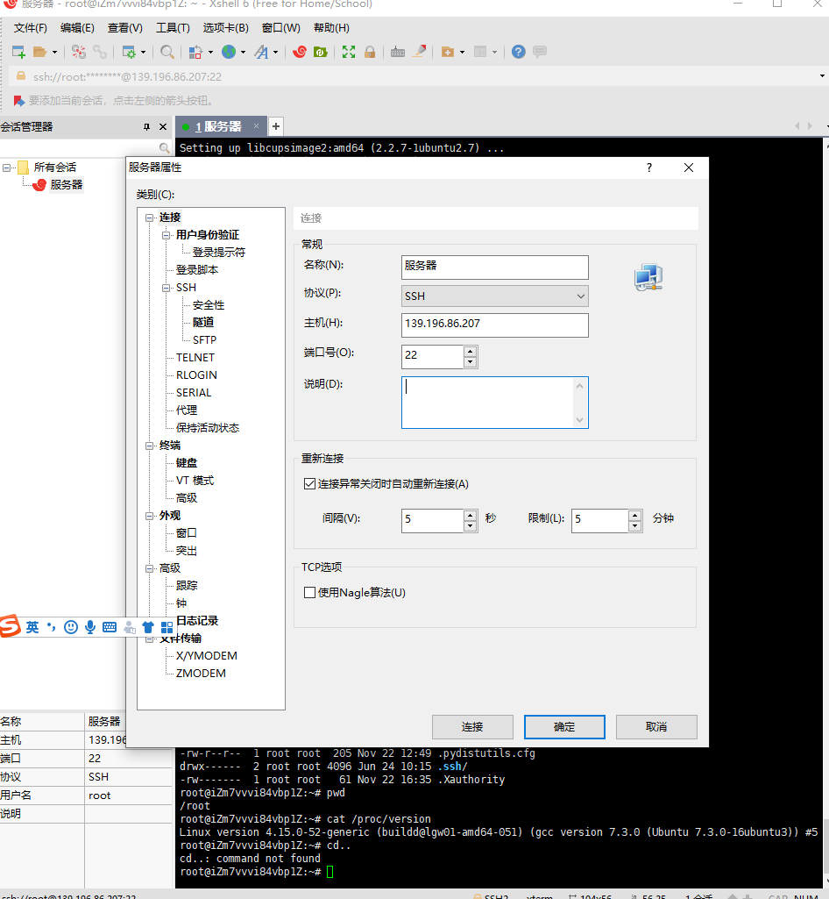
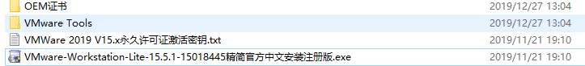
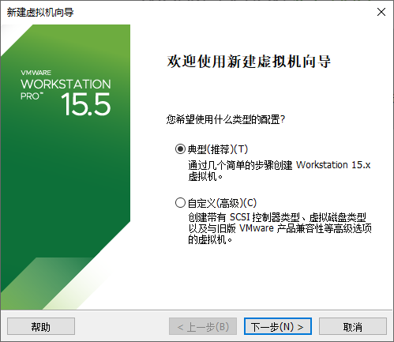
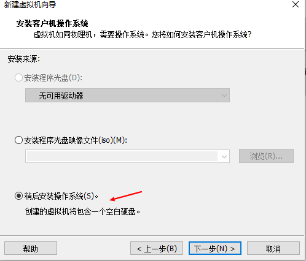
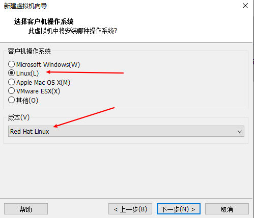
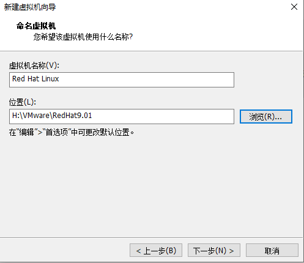
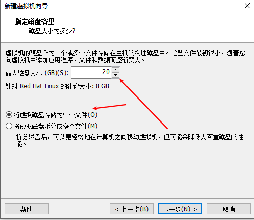
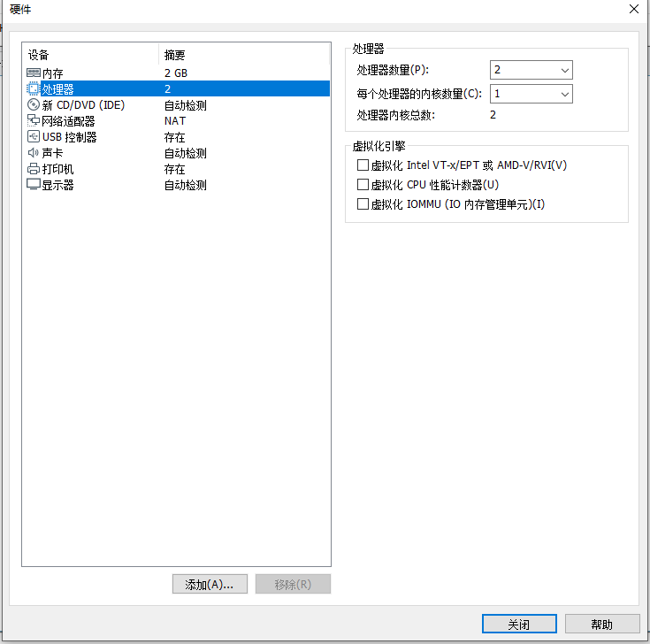
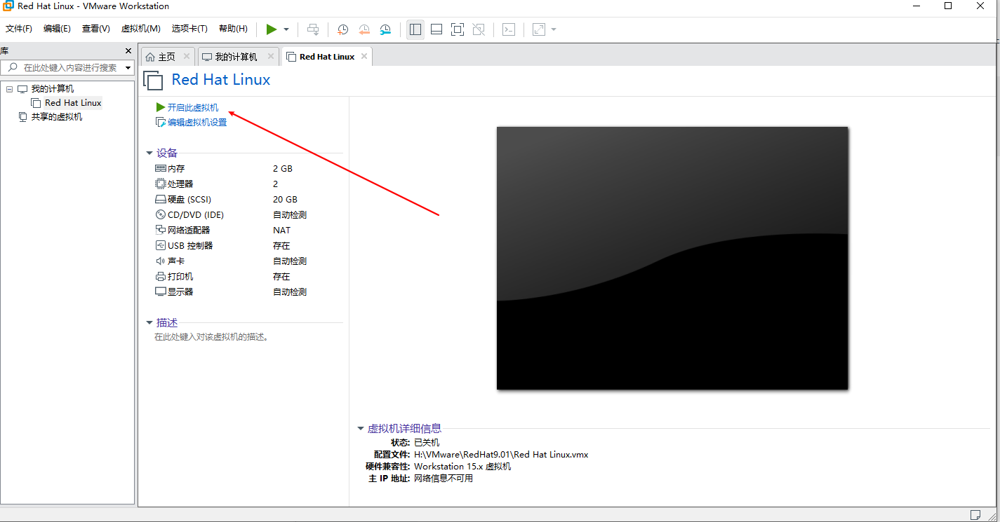

Linux Guide
文章目录
Linux Guide
No.1 如何连接Ubuntu 服务器
我们首先需要下载一个软件 ： Xshell ，然后安装好之后点击文件-新建-输入我们的公网IP ，然后 输入我们的用户名和密码就可以进入到 Linux 的服务器命令行界面了

NO.2 如何创建一个文件
touch abc.txt 然后我们安装一个库 apt install tree ,之后我们查看当前文件的时候就可以直接输入 tree。
1 | root@iZm7vvvi84vbp1Z:~# tree |
No.3 如何使用和查看python版本
1 | root@iZm7vvvi84vbp1Z:~# python2 --version |
No.4 如何给服务器装可视化界面
我们进入 Unbutu 的服务器之后输入如下命令即可进行桌面软件的安装
参考链接
1 | sudo apt-get update |
No.5 嵌入式考核
5.1 安装RedHat系统
A 安装 VMware 虚拟机

点击上图的安装软件，接受许可条款，继续下一步。 不要选择增强型驱动程序。全部完成之后点击输入许可证，在给的文件中已有可以使用的许可证，这里将可以使用的许可证备份下，大家可以自取。
1 | VMware 2019 v15.x 永久许可证激活密钥 |
B 安装RedHat系统





自定义硬件配置

配置好了之后点击完成之后启动虚拟机

在安装的时候如何鼠标不见了同时按住Ctrl+ALT，CTRL+ALT+ENTER是全屏。